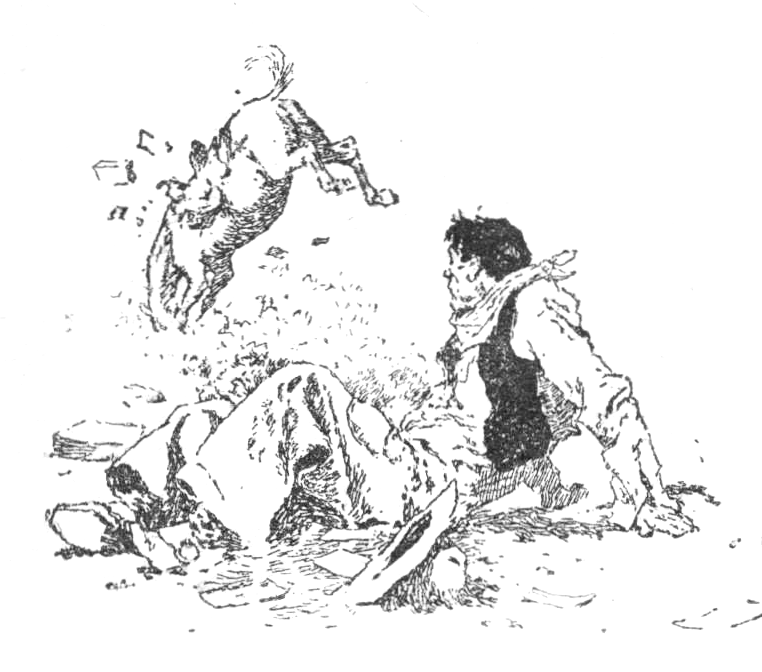

Jay Bird’s Judgement
Who sail bounding mains
On waters where hurricanes blow,
But I take more chances whenever I climb
On the deck of a bucking bronco.”
Chuck Warner slapped the dust off his chaps and rubbed his hip. He took a few tentative steps and grimaced with pain.
“Darn fool cayuse!” he exclaimed. “Ain’t got a lick of sense! Better round up that mail or it will blow plum to Canada. Darn them ‘Shepherd’s Bibles’ anyway!”
He limped around through the sagebrush until he was satisfied that the Cross J mail was all in his possession once more. He looked them over until he came to a certain letter.
“Some folks ain’t got enough spit to seal a letter proper,” he informed himself. “Now ain’t that a slovenly way to fix a letter for shipment? Sealed just enough so a feller has to open her all up in order to seal her right. Maybe I better look and see if anything got lost out.”
All of which seemed a conscientious way to read somebody else’s letters. Chuck had been to Paradise after the mail, and had complained bitterly on having to carry six heavy mail-order catalogs back with him.
“Shepherd’s Bibles!” grunted Chuck. “Everything from rat-poison to railroads, and me riding a bad animal.”
“Maybe the old man can find a cook in one,” suggested Paddy Morse, the postmaster. “He ought to get married, Chuck. He sure can afford a wife.”
“Yeah,” admitted Chuck, leaning against the counter, and wiggling his flexible ears. “Give me some tobacco, Paddy. The old man would sure make a husband for some good girl, and it might not spoil the cooking at the ranch. The covers of these here Bibles says that their distribution is wide, and I’m betting they will be before I get home.”
Old Doc Milliken wandered over to the rack, where Chuck was tying the offending literature to his saddle, and grinned at Chuck when the roan bronco tried to straddle the rack.
“Starting a library, Chuck?” asked Doc, standing at a safe distance.
“Hello, Doc,” grunted Chuck. “How’s all the little pills?”
“Tolable. How’s the old man feeling these days?”
“Ailing,” panted Chuck, bracing his shoulder against the horse, and yanking the string tight. “Old ‘Jay Bird’ Whittaker is pining away, Doc. He’s cooking for the outfit, ’cause he can’t get a cook, an’ our stummicks are in the sere and yaller leaf. Let’s me and you have a drink. I like to drink with a doctor, ’cause then you sort of feels that you’re follering the lead of a man who ought to know whether it’s bad for the human system or not.”
“I’m a veterinary, Chuck,” grinned Doc, accepting the invitation.
“No matter,” grinned Chuck, “I wiggle my ears—you notice.”
“Do you really think he’s pining away for a female cook?” asked Doc.
He accented the word cook. Chuck poured out a drink and scratched his head.
“Any special female that you know of, Doc?” he asked.
“Suitable one, I reckon,” grinned Doc. “He could afford one.”
“Yeah,” nodded Chuck, thoughtfully. “Yeah.”
Chuck rode toward home, slouched in his saddle, as he tried to conjure up the kind of a woman for J. B., when the offensive catalogs broke their moorings, dropped into the dust with a loud splat and were the cause of Chuck being set on foot a mile from the Cross J.
He sat down on a convenient boulder, and perused the open letter. It was from a man in Great Falls, and after the superscription: “Dear old J. B.,” it was terse and to the point:
No cooks. Advise marriage. Who are you going to leave your money to when you die? Pick a good cook, and yell for a preacher. Very truly yours.
“That’s the third time today,” grunted Chuck, sealing the letter. “Three times is a charm,” and he started for the ranch, cursing high heels and mail-order catalogs.
Pailed the cows and slopped the pig.
Thought one day he’d go out West,
Of all the punchers he’d be the best.
Bought some chaps and a wall-eyed bronc
Looked like an actor from a honkatonk.
Went to town on a summer’s day,
Rode his bronc like a bale of hay.
The bronc crow-hopped a couple of lines
And the Rube came home full of cactus spines.”
sang Muley Bowles, from the top-pole of the corral beating time with his fat hands on his knees.
“What’s the matter, dear heart? Bronc lose a wheel?”
“Naw!” grunted Chuck. “Trying physical torture. Bronc come home?”
“Sure did,” yelped a voice, and “Telescope” Tolliver, the longest puncher in Yellow Rock County, stuck his face over the corral top. “Had the saddle under his belly, and both feet in the stirrups. Had to cut that cinch to let him loose. Any mail?”
“Two letters for the old man, and a package for each one of you. I piled them beside the road after I got dumped. I don’t know what’s in ’em. I ain’t in the habit of opening mail, if anybody asks you. Right—down—beside—the—road—where—the—trail—cuts—to—Pole-Cat—Perkins’—place! Want me to draw you a map?”
Chuck wiggled his ears, and plodded off up to the ranch-house. The old man was not in sight, but the rattle of dishes in the kitchen proclaimed his presence.
“Couple of letters for you, J. B.,” yelled Chuck.
The old man came in, his face a combination of flour and soot, and supreme disgust.
“This one must be from a lady,” opined Chuck.
The old man turned the letter over in his hands, and grunted:
“Lady ——! From the looks of that flap, it must be from a coal-miner. Wish I had a cook. Just made bread, and the only way it will ever raise is to use dynamite instead of yeast.”
The old man read the letter, and scowled at the ceiling. Then he opened the other, which was a legal-looking document. He read it part way through, put the other letter in his mouth, and puffed thoughtfully on it. Chuck lit a match, and held it to one corner of the letter, and it burned half-way up before the old man saw it. He spit it out, and stared at Chuck.
“Did you hear what Muley said about your cooking?” asked Chuck.
“No,” whispered the old man, absently. “Nope.”
“Went like this:
And put liniment in the stew
His coffee tastes like alkali
And his beans are full of glue.
His bread shows streaks of iron rust,
His ——”
“Muley!” yelped the old man. “Muley be——! Gol dingle dang!”
“Of course it ain’t none of my business, old-timer,” observed Chuck, “but if I was you I’d get married.”
Whittaker stared at Chuck for a moment, and then:
“I’d give a thousand dollars if I was! There’s that blasted bread burning up!”
And he raced for the kitchen, leaving Chuck dumbfounded.
“Thousand dollars!” whispered Chuck. “Twenty-five months’ salary. Mama!”
He wandered down to the bunkhouse, and began strumming on Hen Peck’s banjo. Muley and Telescope came in, unconcerned-like, proceeded to surround Chuck, and then to administer chastisement with a quirt.
Chuck managed to squirm loose, and stood at bay on top of a bunk, with the banjo as a weapon of defense.
“Keep away or I’ll fill you both full of discords!” he yelped. “I didn’t lie to you, did I? Wasn’t the packages there? Listen to words of comfort and good cheer, you cannibals: the old man is going to get married.”
“Yeah?” chirped Telescope. “Chuck, ain’t you got no sense at all? Why didn’t you tell us that he wasn’t and we’d dress for the wedding? As the champion blockhead liar of the world——”
“All right, he ain’t then,” said Chuck, in an injured voice, and began tuning up the banjo.
“Why tell us a lie like that?” inquired Muley, sadly. “What do you reckon old Ananias would say if he heard his pupil talk that away?”
“I’m a liar,” admitted Chuck cheerfully. “Let her go as she lies.”
Muley and Telescope shook their heads, sadly, but the seed was sown, and it was only a few minutes later that Telescope asked:
“Was that letter from her, Chuck?”
“I ain’t feeding no pearls to hogs,” declared Chuck with finality.
“You’re among friends,” stated Telescope.
“Not a word. If anybody says that I mentioned it I’ll swear that they lied. Sabe?” And he went on playing discords.
The next morning Chuck went up to the house to see if the old man wanted anything in town, and he found him humped over in a chair, reading that legal-looking letter, of the day before. He grunted at Chuck, and put the letter back into the envelope.
“Chuck, a woman is a queer critter, ain’t she?” he mused.
“Not when you sabe them like I do.”
“Don’t slam the door as you go out, Mister Warner. Where’d you learn to lie like that?”
“I ain’t lying,” defended Chuck. “There’s plenty to learn about women but nobody ever finds it out. One would be a great comfort and cheer to you, old-timer.”
“Don’t slam the door,” repeated the old man, and went back into another room.
Chuck went down to the corral, climbed to the top rail, and rolled a cigaret. Chuck always smoked innumerable cigarets and wiggled his ears when pondering a weighty subject. He had perfect control of his ear muscles, the trusting eyes of a child, and utter disregard for the truth. His legs were far too short for his huge body, and the wide Texas chaps made him look shorter and wider than he really was. He fumbled with his buckskin chin-strap, and nodded solemnly to a pinto in the shade of the high fence.
“One thousand dollars,” he repeated aloud. “Ye gods and small fish! I’ll get Ricky Henderson to do it, ’cause he writes good. Mine looks like I was trying to vent a bunch of brands. I may be unjustly branded as a liar but it will sure improve the culinary end of this ranch. Reckon I’ll let Hen Peck in on it, ’cause Hen’s as big a liar as I am.”
Henry Peck wasn’t a hard person to explain things to, and he nodded solemnly when Chuck broke the news to him.
“Thousand dollars! Gee gosh, Chuck! That’s a lot of money to give for a wife. Go ahead, old-timer. I’m one of the best little lookers-on you mostly ever seen. I ain’t fool-proof, so I don’t monkey with the fair sex. You know what happened to John Alden when he went huntin’ a squaw for Miles Standish? Well, I’m a innocent bystander, Chuck, ’cause the old man might fall for one of the Mudgett sisters, and then where’d old man Peck’s little offspring be, eh?”
“You come down with me anyway, Hen,” pleaded Chuck. “You help me talk it into Ricky’s hard head, will you?”
“I’ll help that much, Chuck.”
Ricky Henderson was sprawled in his lone barber-chair, trying to hone an edge on a decrepit razor, when they dropped their reins out in front.
“Howdy, cow-trailers,” he greeted them lazily. “Want a mass-age today?”
“You shaved me so close a week ago, Ricky, that I have to swab my mouth out with hair restorer every day to try and drive ’em out the right way,” laughed Chuck.
“Holee Moses!” yelped Hen, looking at a picture over the mirror. “Who sent you that, Ricky?”
“I should hope to find out,” grunted Ricky disgustedly. “Some female, I’d bet.”
The picture in question was a cheap lithograph caricature of a barber shaving a pig, and underneath these lines:
Your razors all pull And your scissors are broke. As a barber, you boob, You are surely a joke.
“Valentine,” explained Ricky. “Got it today. Believe me, I’m sure taking no chances on who sent it. I may make some folks sore as a boil, but I’ll hit the female what sent it, ’cause I’m sure going to scatter ’em far and wide.”
“You write a good hand, Ricky,” observed Chuck, rolling a cigaret one-handed. “We got a little scheme. Listen.” And then he proceeded to outline it to Ricky, who nodded and grinned.
“Fine!” he applauded. “Do I know all the cooks around here? Well, I’d kiss a Kiowa. I’ll write a note to each one, and mail ’em as you tell me to. We’ll sure land somebody. Do you think he’d stand for paying a good salary while they’re cooking? I won’t go so far as to sign the old man’s name, but I will use his initials, J. B. W. How’s that strike you?”
“I’ll buy a drink—that’s how it strikes me,” grinned Chuck.
Chuck and Hen spent the night in Paradise. The next day Chuck wandered down to the bunkhouse, where Muley was deep in the mysteries of a game of solitaire.
“Shepherd!” hissed Chuck, mussing the layout. “Where is Telescope?”
“I don’t know. Found a bride for the old man yet?”
“Who put you wise?” asked Chuck.
“Aw, don’t get sore,” advised Muley, grinning. “We’ve got the old man’s interests as much at heart as you have. Me and Telescope both feels for him, Chuck.”
“This is my matrimonial bureau!” snapped Chuck. “You and that long-complected cross between a peanut and a pelican will just about jinx the whole system I’ve worked up. Can’t a feller do nothing except work around here without having a volunteer crew working behind his back?”
“Matrimony be darned!” grunted Muley. “I ain’t losing no sleep over love’s young dream—I’m hungry! My insides clamor for cooked food.”
Just then the old man came into the bunkhouse, and sat down to watch the game.
“Muley,” he asks, after the cards are dealt, “Muley, have I been—uh—acting natural lately?”
“Never did,” replied Muley, uninterestedly.
“What seems to ail you?” inquired Chuck.
“Well,” the old man scratched his head, foolishly, “well, a while ago that female cook from the Triangle shows up with all her plunder, and moves in on me. I asked her what she meant, and gol dingle dang it, she winked at me!”
“She’s a good cook,” observed Chuck, wiggling his ears.
“Maybe Johnny Myers made you a present of her,” suggested Muley. “Never kick a gift cook in the face.”
“Gift ——!” snorted the old man. “Myers was paying her fifty a month, and she quit him to cook for me at seventy-five.”
“Business-woman,” observed Chuck.
“Business ——! Said I wrote and made her the offer!”
“Well, don’t yell your head off about it then,” advised Muley. “Stick to your written word, J. B.”
The old man muttered to himself, and ambled back to the house. Hen came home in time to partake of the best feed the Cross J outfit had eaten in weeks. Annie Schmidt surely could cook. Chuck and Hen grinned across the table at each other, and after the meal they shook hands on the results.
“Ricky made a bulls-eye the first shot,” chuckled Hen. “Some feed!”
“See anything of Telescope?” asked Chuck, but Hen shook his head.
“Nope. I’m betting he went down to Silver Bend with that bunch that went to see that opery show.”
“Show down there?” asked Muley, flopping down beside them.
“Uh-huh! ‘Mickydoo’! Lot of females in tights. You ought to see them bills.”
“Huh!” grunted Chuck. “Let me tell you what I seen once when I was in New York.”
“Go ahead and lie, Chuck,” grinned Muley. “What did you see in New York?”
“I seen a feller what was just as fat as you are, Muley. He looked a lot like you, but he had brains, which spoiled the resemblance.”
The next morning Chuck was sitting on top of the corral, trying to teach Muley how to spin a rope, when the old man came down and climbed up on the fence. He waited until Muley stopped to untangle his legs from a rope, and then remarked, softly—
“Chuck, I must be sick.”
“Well, if you must it’s o.k. with me,” replied Chuck. “But why insist?”
“I—I’ve been doing things I ain’t got no recollection of.”
“Meaning which, J. B.?”
The old man motioned back toward the house, and slid closer to Chuck.
“A little while ago that Swede cook from the Seven A shows up, and moves into the house. She—she orates that I’m paying her seventy-five a month.”
Chuck wiggled his ears at Muley, and nodded.
“You must be sick, old-timer. Hundred and fifty to run the kitchen. Why for that money you could hire a French chef and have patty defoy grass.”
“Another female?”
“Naw! Patty is something to eat.”
“——!” snorted the old man. “Who wants to eat grass that’s got a middle name? Loco-weed suits me.”
“What are you going to do?” asked Muley.
“Do? I can’t do a thing. She says I wrote to her, and made the offer.”
The old man wandered down to the barn, while Muley did a few waltz steps, and recited:
He hires two expensive cooks to choose one for a wife.
He must have been a little mixed the day he sent the screed,
’Cause it’s mighty hard to choose between a Dutchman and a Swede.”
A little later on Doc Milliken rode in, and went up to the ranch-house. When he left there he met Chuck.
“Been up to see the old man,” stated Doc, as he untied his mount. “Old man sure acts queer, Chuck. Wanted to talk about women. When a man wants to talk about women, he’s getting serious.”
“Yeah,” agreed Chuck, “I reckon he’s serious all right.”
Chuck wandered on up to the house, and found the old man sitting out on the back steps, puffing away on an empty pipe, and staring off into space. Chuck sat down beside him, and they both seemed deep in thought, when the back door opened and a voice announced:
“Please, Mister Vittaker, a gentleman is inside for you.”
“What did she say?” grunted the old man.
“Your skee-jumping stew-artist said there was a gentleman inside for you,” replied Chuck.
“Please,” repeated the voice of Hulda Hansen. “He vishes you, Mister Vittaker.”
“Better go in,” advised Chuck. “You’re being wished for.”
The old man grunted, and went into the house. Chuck smoked up his cigaret, and started for the bunkhouse. When he was half-way down there he heard a crash, a few expressive cuss-words, and two men, locked in each other’s arms, fell off the porch into the dust.
A couple of dogs danced around the two, barking with joy, while a cloud of dust arose from the field of battle. In the angle of the house stood a rain barrel, half-full of water, and the fight terminated when one of the disheveled figures doubled the other like a jack-knife, and dumped him into the barrel.
The other limped wrathfully past Chuck, and toward a horse tied at the corner of the corral.
“Howdy, Wick,” greeted Chuck. “How you feeling this fine day?”
Wick Smith turned and spat viciously.
“Fine ——!” he snapped, and went on down to his horse, and rode away.
Chuck walked up and helped the old man out of the barrel.
“What seemed to be ailing Wick?” he asked, dumping the barrel over.
“Ailing?” The old man shook himself like an old dog. “Ailing? Chuck, I don’t blame him—gol dingle dang me if I do! I sent his wife a letter, asking her to cook for me, and stating matrimony as the main consideration.”
The old man shook himself and went into the house. Chuck took a deep breath, and started for the barn.
“I’m going to kill Ricky!” he muttered. “I sure am!”
He saddled his horse and raced all the way to Paradise. Ricky took one look at Chuck’s face, as he came in, and dropped his razor.
“Ricky, you—say, what did you send all them letters for?”
“Letters? Why I never sent but one, Chuck. One to Annie Schmidt.”
“Sure?”
“Hope to die. Here’s the rest.”
Ricky opened his desk, and handed Chuck a bunch of envelopes.
Chuck grunted, and glanced at them before he put them in his pocket.
“What seems to be the matter, Chuck?” asked Ricky, anxiously.
“Darn me if I know, Ricky. I reckon Muley and Telescope must have got too enthusiastic. I’ll keep these letters, Ricky, and I can prove that me and Hen are innocent if it comes to a show-down.”
When Hen came in that afternoon he found Chuck playing solitaire in the bunkhouse. He flopped down and fanned his face with his hat.
“Chuck,” he blurted, “somebody’s playing the joker wild around here!”
“Uh-huh,” grunted Chuck, “mis-deals and frosted decks, too, if anybody asks you. What happened to you?”
“Well,” Hen cleared a place on the table for his feet, “well, I was coming past the Mudgett place a while ago, and Annie Mudgett came out and yelled at me. Showed me a letter, and wanted to know if it was on the square. Letter from our beloved boss.”
“Read it?” asked Chuck.
“Uh-huh.” Hen clapped his hands, and assumed an angelic expression.
“Dear Miss: You have attracted me for some time, but I have been too bashful to set up with you. I reckon I can make you happy and feed you thrice a day. I don’t want nobody to sabe the state of my feelings, so I’m offering you seventy-five a month to cook for me. Yours very affectionately and truly ——”
“My ——!” yelped Chuck. “Jay Bird Whittaker, Pasha of Paradise!”
“At seventy-five dollars per month for each inmate,” nodded Hen seriously. “Let’s go and kill Ricky.”
“Muley or Telescope,” corrected Chuck, and then he told about his visit to Ricky.
Hen listened and shook his head, and just then the old man came down and leaned disconsolately against the door.
“Why don’t you cheer up?” asked Chuck.
“With the asylum staring me in the face?” wailed the old man.
“Asylums ain’t so awful bad,” consoled Hen. “You won’t have to cook. Where do you figure you’re headed towards, Warm Springs?”
“Got three cooks!” he wailed, counting on his finger. “T-h-r-e-e!”
“Three cooks is a crowd in a kitchen,” agreed Chuck, wiggling his ears. “Who is the third one?”
“Widder Saunders! Gol A’mighty! Said she was of the same mind as me.”
“Nothing like harmony,” nodded Hen, and the old man went back to the house, cursing like a muleskinner.
Telescope and Muley failed to show up that night, and the old man occupied their bunk.
“Can’t sleep up at the house,” he stated, sadly. “It can’t be did. Them females are occupying all the beds, and you never can tell when they’ll start a war. They ain’t speaking—they ain’t, and they sure look at me like a hungry coyote sizing up a sick calf. Dang it all, I—I ain’t so much afraid of an asylum as I was. Maybe, if I don’t get too crazy, I’ll sell out my cows and go in for sheep.”
The next morning, before the occupants of the bunkhouse were awake, somebody knocked loudly on the door, and Chuck yelled sleepily—
“Come in!”
The door opened, and there stood Abe Mudgett.
Be it known that Abe Mudgett was born with a cross-grained disposition, and acquired more ability than judgment with a gun. He leaned against the doorway and considered the sleepy face of J. B. Whittaker, protruding from under a blanket.
“Whittaker, you wrote a letter to my sister.”
His remark was more of a statement than a question. The old man blinked rapidly a few times and moistened his lips. He tried to speak, and nodded weakly.
“You’re on the square in this are you?” asked Abe, and the old man clucked deep in his dry throat.
“She’s up at the house,” stated Abe. “I just wanted to know if you was on the square. Shake hands with your prospective brother-in-law. Annie will make you a good wife.”
The old man got up, wobbled across the room and shook hands with Abe. He tried to put his feet through the sleeves of his coat, but they wouldn’t go, so he sat down on the bunk and put on his hat. Abe rolled a cigaret and slapped the old man on the back.
“Me and you are going to shake up this here place, brother-in-law,” he declared. “You been running things slack lately. See you later.”
The old man threw his hat over into the corner and picked up his belt and gun. He ran his fingers over the filled loops of the belt and then:
“——!” It was more of a prayer than profanity. “I wish I hadn’t traded off that .38. A .44 hops too much for a feller what ain’t got a strong grip.”
He slipped on a pair of pants and boots, and walked outside. He stopped on the step, seemed to look down the road, and then stumbled back inside.
“Look!” he whistled weakly. “Coming!”
Henry and Chuck stepped outside and glanced down the road. Coming up to the bunkhouse is old Runs-With-A-Wolf, a Piegan warrior, and a gaily-dressed squaw. The squaw was resplendent in a yellow and vermilion blanket, and her hair was greased until it shone in the rising sun. They stopped at the door, and the old buck grinned from ear to ear, as old Whittaker peeked around the corner of the doorway.
“Klahowya,” greeted the old warrior. “Me catchum talking paper. Good! My klooch too much belong to me. Sabe? Me brungum young klooch. Good cook. You betchum life!”
“Even the reservation wasn’t sacred,” said Chuck, in a far-away voice.
“Love is like a Shepherd’s Bible—it has a wide circulation.”
“I—I—” The old man choked and teetered back and forth on his feet. “I—oh—!” And he weaved toward the house with the pair of aborigines trailing behind.
Chuck and Hen stared at each other and then went back to finish dressing. Chuck swore softly over a tight boot and Hen nodded agreement. They were just putting on their belts when Muley came in, grinning, and dumped his saddle into a corner. Chuck and Hen merely glanced at him, as he sat down on a bunk, and grinned over a letter.
“Got a letter from Telescope,” he announced. “Listen to this:
“The opery troupe busted up in Silver Bend, and I’ve got a mate for the old man. Her name is Evangeline Van Dyke. We’re both broke. Send me ten dollars. If she don’t suit I’ll get her a job slinging hash. She looks fine by lamplight. Tell Chuck and Hen to stop worrying, ’cause this settles the cat-hop.”
“You sent him the money?” asked Hen, and Muley nodded.
“Uh-huh. He’s too late though, ’cause I’ve brought that new hasher from Paradise to apply for the position. She’ll make a hit with the old man. Leave it to little Muley to furnish the goods.”
Muley shut the door, and Chuck stared at the ceiling dazedly, while Hen got up and walked to the door and gazed toward the house.
“Chuck, come here and have a look!” exclaimed Hen.
Chuck walked over and gazed toward the house. The front porch was filled with the gentle sex, and from the attitudes there was a coldness between each and every one.
“Gee gosh!” gasped Chuck. “Poor old Jay Bird!”
“Howdy, boys,” greeted a voice, and they turned to see Doc Milliken, riding up.
He climbed off his horse and squinted at the ranch-house.
“Remember what you mentioned to me one day, Doc?” asked Chuck. “About the old man getting a wife? See what your prescription done?”
“Golly!” Doc looked at the riot of color on the porch, and then: “I never knew he was a Mormon, Chuck. I’ll congratulate him.”
Doc walked up the path, but turned and went around to the back door. Chuck and Hen leaned carelessly against the doorway, and Chuck even essayed to whistle a funeral march, when they heard a whoop and a crash and the kitchen window, sash and all, came out along with Doc Milliken. Doc sprawled on the ground for an instant, shook the casing loose from his neck, and galloped toward his horse. Without a backward glance he jumped into the saddle, ignoring stirrups, and skidded his mount around the corner of the barn.
A second after Doc disappeared around the corner, old man Whittaker limped out of the kitchen door, with a rifle in his hands. He looked all around and then plodded down to the bunkhouse, where he peered around the corner and then shook his head sadly.
“Out of range?” queried Chuck, and the old man nodded.
“Wrong diagnosis?” asked Hen.
“Gol dang him, he makes fun of misfortune!” wailed the old man. “He came in there and he says—‘Morning, Elder!’ I’d love to kill a horse-doctor. How in thunder am I ever going to get rid of them women?”
“You might ask Muley,” suggested Chuck. “He’s up there in the house, looking for your opinion.”
“Muley, eh? I’ll try anything a few times,” and he trotted up to the house, and brushed past the women.
“I’m going to go away pretty soon, Henry,” said Chuck solemnly. “This is getting too much for—look!”
Muley Bowles’ fat body slams through the crowd, crashed against the railing of the porch, which gives way, and Muley landed on his neck in the dirt. He got to his feet, walked dazedly around in a circle, and then pointed straight for the bunkhouse. A section of the porch is around one of his feet, and he drags it along like a toggled bear. He stopped in front of Chuck and Hen, and smiled absently.
“How did the old man like her, Muley?” inquired Chuck.
Muley rubbed a swelling on the back of his head and shrugged his shoulders.
“Take a look and answer it your own self,” he wailed. “I knowed she wasn’t no Lillian Russell for looks, but I didn’t think she’d drive him to murder.”
“What did you say to him?” asked Chuck sympathetically.
“Say? I said: ‘I’m the hombre what delivers the goods. She can cook——’ ”
“What did he say?” grinned Hen.
“He didn’t say,” wailed Muley. “He hit me with a chair and pitched me off the porch. He can keep his old thousand dollars—ornery old son-of-a-gun!”
Came the rattle of a buggy, and they turned to see Telescope Tolliver and a lady. The lady was a stranger to the trio, and was resplendent in gorgeous colors, both as to complexion and clothes, and Telescope smiled triumphantly, as he pointed at the porch with his whip.
“What’s going on up there?” he asked.
“Reception,” grunted Chuck, wiggling his ears at the lady. “Muley spread the word, Telescope, and it’s a bridal reception waiting for you.”
“Gracious!” exclaimed the lady, and Hen nodded. “Yes’m—I hope so.”
“Where’s the old man?” asked Telescope.
“In the house,” replied Chuck. “Bashful old pelican.”
Telescope swung the team around and drove to the house. Muley grinned sadly and walked unsteadily into the bunkhouse, while Chuck and Hen followed the rig up to the house.
Telescope stopped with a flourish, and a smile at the reception committee, but there were no answering smiles. Telescope glanced inquiringly at Chuck, but the latter’s immobile, trusting eyes gave him no clue.
“Hold the team, will you, Chuck?” asked Telescope. “I want to go in and see the old man.”
“You don’t need to get down,” stated the old man’s voice from the door, and he stumbled out with his hat in his hand and cold anger in his eyes.
“Mister Whittaker, this is Miss Van Dyke,” announced Telescope. “She can cook a little, and ——”
The old man kicked loose a remnant of the broken porch, which hit one of the high-strung horses in the ribs, and then he hopped into the air and cracked his heels together.
“Yeah-h-h-h-h-h!” he screeched and threw his hat at the head of the nearest horse, with the result the front wheel of the buggy removed the rest of the broken porch, left the wheel there as a token, and rattled and banged out of sight across the prairie.
When Telescope made the introduction he was standing up, and when the team whirled into the porch Telescope imitated a pin-wheel and lit in the dust on his back with Miss Van Dyke sitting on his chest.
She slid from there to the ground and tried to lift her big hat off the bridge of her nose. Telescope got to his feet, dug the dirt out of his eyes, and pointed at the lady. He couldn’t talk.
The old man nodded understandingly and jerked his thumb over his shoulder toward the rest of the frightened women.
“Herd her with the rest, Telescope,” he said. “Bunch ’em until I can build a corral.” And then he limped slowly down toward the bunkhouse.
Henry and Chuck turned slowly and followed the old man, who walked into the bunkhouse door, and then came right out again, with the big water bucket hanging around his neck. He wandered straight for the corral, talking to himself and slapping his hands on his hips.
Muley peered out as Chuck and Hen came up to the door.
“Old pelican thought he could slip down here and hand me another one, I reckon,” grinned Muley. “Golly, he sure must of hated that lady on sight. I handed him the bucket full of water, believe me!”
Chuck gave Muley an idea of what happened to Telescope, and he shook his head, sadly.
“We sure must have guessed wrong—or Chuck lied about that thousand dollars.”
“I didn’t lie!” snapped Chuck. “He said it. You and that animated flagpole had to cut in and do a jobbing business, and ruin things. I told you to keep off, didn’t I? He’d ought to kill you both, believe me!”
“Say, is Whittaker around here?” inquired a voice at the door.
“Howdy, Hank,” greeted Hen. “How’s things at the Seven A?”
“Mer-r-yah!” snarled Padden. “Where is he?”
“Down at the corral, I reckon,” answered Chuck.
“Corral?”
“Yes,” nodded Chuck. “Want me to give you a map? He don’t know what the word means, boys, ’cause his animals are all raised pets.”
Chuck and Hen, scenting trouble, followed Padden down to where the old man stood at the corral gate, gazing off into space. He whirled and glared at Padden.
“Why don’t you get a nose-bag?” asked Padden sarcastically. “Look better than that bucket.”
The old man stared down at the bucket, and then threw it over the fence.
“What do you want, Padden?” he demanded.
“Where’s my Swede cook?” asked Padden. “You danged kidnaper! Make love to my cook will you?” and he made a rush at the old man.
The footing was none too secure, and Padden must have misjudged the distance, because, when the whirl of dust blew away, Padden’s head was through a space between the poles of the fence, and the old man was on his hands and knees, administering chastisement to Padden with a piece of broken board. Padden managed to squirm loose and got out of range of that broken board.
“I ain’t kidnapped—uh—no—uh—Swede!” panted the old man. “If she’s up at the—uh—uh—house—go get her! Gol—uh—dang it!”
Padden looked himself over sadly and nodded, and then limped up toward the house.
“What seems to be the trouble around here?” inquired a voice, and they turned to see Johnny Myers, foreman of the Triangle, sitting there on his horse, staring at them.
“How—howdy, Johnny,” panted the old man.
“How—howdy ——!” snorted Johnny. “I came for my cook, and I’m going right up and get her. Sabe?”
“He’s a gentleman and I wish him luck,” stated the old man hopefully, as Myers rode toward the house. “Reckon I better wash up a little before somebody else brings me a cook.”
Hen and Chuck wandered back to the bunkhouse, just as Padden and Myers rode down that way and stopped. The old man sat on the edge of the horse trough and slowly washed his hands, and paid no attention to them as they rode past.
“Chuck, I’d admire to have some kind of an explanation,” begged Padden, glancing back at the house. “Hulda insists that she’s hired out for seventy-five a month and won’t come back to the Seven A.”
“Annie puts up the same howl,” nodded Myers. “Old J. B. ain’t got no use for two cooks.”
“Two?” yelped Chuck. “Two? Them are all cooks up there!”
“My ——!” exclaimed Hank piously. “I hit a crazy man!”
“Yes,” agreed Hen, “and you’ll be sorry every time you set down, Hank.”
“Here comes the sheriff and the doctor,” grinned Myers. “Between that combination we ought to do well.”
“I’ve got a warrant for the arrest of J. B. Whittaker, charging attempt to murder upon the person of Doctor Milliken,” announced the sheriff. “Where is Jay Bird, Chuck?”
“He tried to puncture my earthly envelope,” apologized Doc. “He’s cook crazy!”
Chuck wiggled his ears desperately for a moment, and then:
“You fellers all come in the bunkhouse with me. I got something to tell you.”
They filed into the bunkhouse, and gathered around Chuck, while he unfolded the whole tale, as near as he could.
“We was getting rotten cooking,” concluded Chuck lamely, “and—everybody seemed to think he wanted to get married.”
“He really said he’d give a thousand dollars if he was married,” stated Hen. “He sure did.”
“That warrant is null and void, Bill,” laughed Doc. “I don’t blame the old man a bit, but how in thunder is he ever going to explain things to all them women?”
“My cook is a darn good pot-wrastler, but her head is six feet thick,” wailed Padden. “She can’t see nothing but that seventy-five dollars.”
“Mine, too,” nodded Johnny Myers. “She’s minus understanding.”
“You do it, Doc,” begged Chuck. “Can’t you frame something?”
Doc Milliken scratched his head for a moment, and then:
“Hank, you hitch up a team to the old man’s hay-rack, and the rest of you fellers stay right here. I got an idea.”
They shut the door behind them, and in a few minutes the old man came in slowly and sat down on a bunk.
“I’m sick,” he announced sadly. “I’m a sick man.”
“Uh-huh,” grunted Chuck. “You’re suffering from a complication of females, old-timer.”
Bill McFee picked up a greasy deck of cards and began to build a solitaire layout, while the rest of the crowd watched him, abstractedly. Suddenly the door creaked and through the narrow opening came Telescope’s voice:
“Hey, Muley! Pitch my war-sack outside, will you?”
“Ain’t fired are you, Telescope?” asked Chuck.
“Not me—I’m quitting. I ain’t going to get no smallpox.”
“Smallpox?” grunted the old man. “Who’s got smallpox?”
“You have!” yelped Telescope. “Leave my stuff there, Muley. I don’t want it after he’s contaminated it that way.”
“Well, ——!” wailed the old man, as the door banged shut. “What will I have next? I ain’t got no smallpox—gol dingle dang it! Where could I get smallpox?”
“From me,” laughed Doc Milliken, sticking his head into the back window. “I gave you the first thing I thought of. That accounts for it all. You was delirious and didn’t know what you was doing. Talk about fast colors! Whooe-e-e! Calico never faded so fast.”
Came the rattle of a wagon, and they made a rush to the door, in time to see a wagon-load of women jolt past and roll out of sight up the road.
“Gone!” gasped the old man. “Gone! I’m too much relieved to be curious, but I’d sure like to have a little light on the subject. Am I or am I not crazy?”
“You are,” declared Chuck. “But not too crazy.”
“Chuck,” the old man hitched his gun around to the front, and rubbed the palms of his hands on his hips. “Chuck, you’re doing the talking.”
“Well,” said Chuck, “we thought—now, keep your hands off that gun! You want to hear this? Well, fold your arms. Seems like everybody wanted to get you married, and you said—remember the day I brought you that long letter? Remember I said that you ought to get married, and you said: ‘I’d give a thousand dollars if I was.’ Remember that? You said you’d give a thousand if you was, and ——”
“Yeah!” howled the old man. “Yeah, I said that! Go ahead!”
“Didn’t you mean it?” asked Chuck.
“Gol dingle dang it! Course I meant it.”
“Well,” wearily, “what you kicking about? We done the best we could to earn that money and make you happy.”
“Best?” yelped the old man. “You done your ——”
“Necktie party?” inquired a voice, and they turned to see Ricky Henderson sitting there on a pinto horse, grinning at them. He looped one long leg around the horn of his saddle and calmly rolled a cigaret.
“Well, let’s get to the bottom of this here thing,” grunted Whittaker. “Go ahead, Chuck.”
“Well,” continued Chuck, glaring at Ricky, “you said you’d give a thousand dollars if you was married, and ——”
“Yah!” spat the old man. “I said it—dang you! I said I’d give a thousand dollars if I was married. Can’t you understand United States language? Listen: I don’t like to tell this in public, but there comes a time in the life of every darn man when he gets so mad or crazy that he has to bare his soul. Sabe? I’m both, I reckon. When I was down at Great Falls, a month ago, I met a female of the species who seems to be a gold-digger, and she—she sued me for breach of promise and ten thousand dollars. That long letter was from a lawyer—dang you, Chuck.”
“You said you’d give a thousand dollars if you was—” began Chuck weakly.
“Was—you imbecile!” howled the old man. “Was—not to get! Now, who is to blame for ——”
“Wait,” begged Chuck. “Wait a minute.”
Chuck whirled and trotted to the door of the bunkhouse, and came back in a moment, with a bunch of envelopes in his hands. He sorted them over and glared at Ricky, who looked supremely innocent of wrongdoing.
“Ricky,” Chuck placed both hands on his hips and wiggled his ears at Ricky. “Ricky, did you ever find out who sent you that picture of a barber shaving a pig?”
“Nope,” replied Ricky, shaking his head.
“Wish I knew. I sure bought a lot of them things, and I handed somebody a bunch, but nobody peeped.”
“Nobody peeped, eh?” snapped Chuck. “You sure handed somebody a bunch, Mister Henderson. The wrong folks got it handed to them.”
Chuck tore open an envelope, looked at the contents, and then handed the whole bunch to Ricky.
“Take your darn funny pictures and get off the ranch before I ——”
“My ——!” gasped Ricky, staring at the envelopes. “I—I sent the wrong bunch of letters!”
“You most absolutely did!” yelled Chuck.
“I—I wish I knew who sent that one to me?” mumbled Ricky foolishly. “I—I’d like to get even. I’d send this whole works to that one person. I’d sure like to get even with that person.”
“Yah?” yelped the old man. “Would, eh? Say you would? Well, gol darn your hide, Ricky, you are! According to my judgment you’re even. Sabe? I—I sent it to you.”
Transcriber’s Note: This story appeared in the April 3, 1919 issue of Adventure magazine.